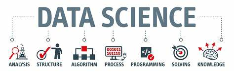
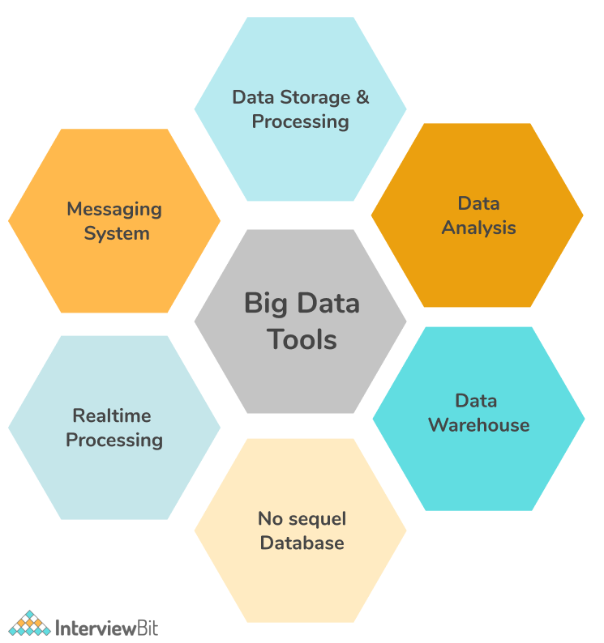
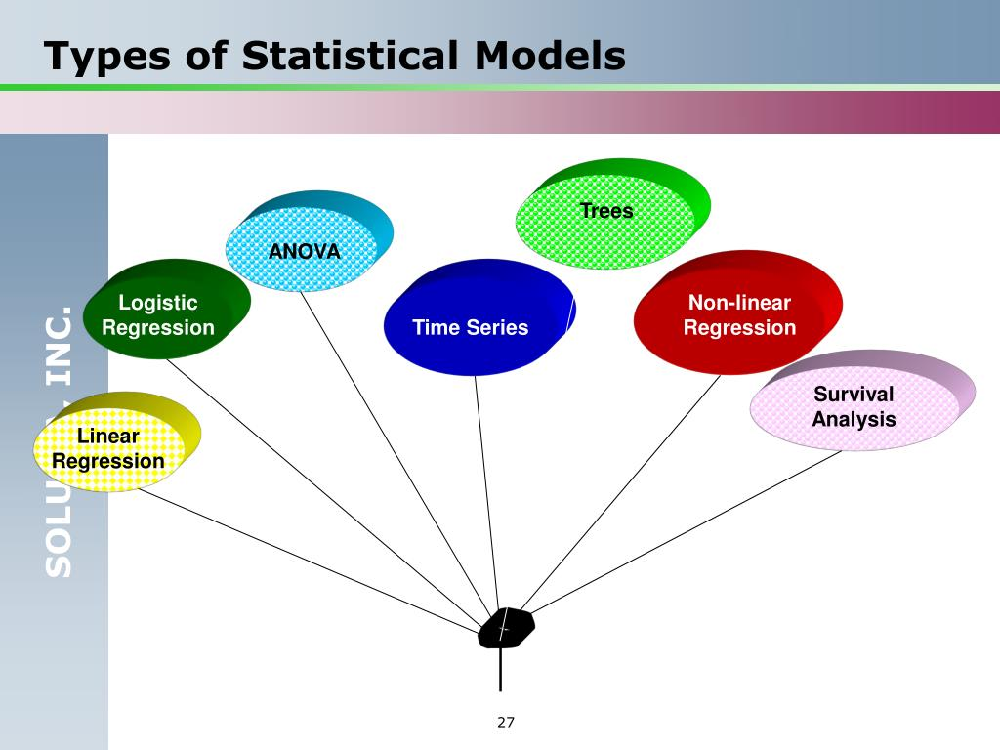

Data Science Visuals & Context

This image represents a typical data science workflow, including data acquisition, cleaning, modeling, and visualization.

Example of Python code for cleaning raw datasets using Pandas — one of the most powerful tools for data manipulation.
A bar chart created using Matplotlib and Seaborn, showing customer segmentation based on purchase behavior.

Overview of a machine learning pipeline: data preprocessing, training, evaluation, and deployment using Scikit-learn.
Output from a regression model predicting housing prices, including coefficients, R² score, and residual analysis.

An architectural diagram showing integration of big data tools like Hadoop, Spark, and Hive in a data platform.

Visual showing natural language processing tasks like sentiment analysis and named entity recognition using NLTK and spaCy.